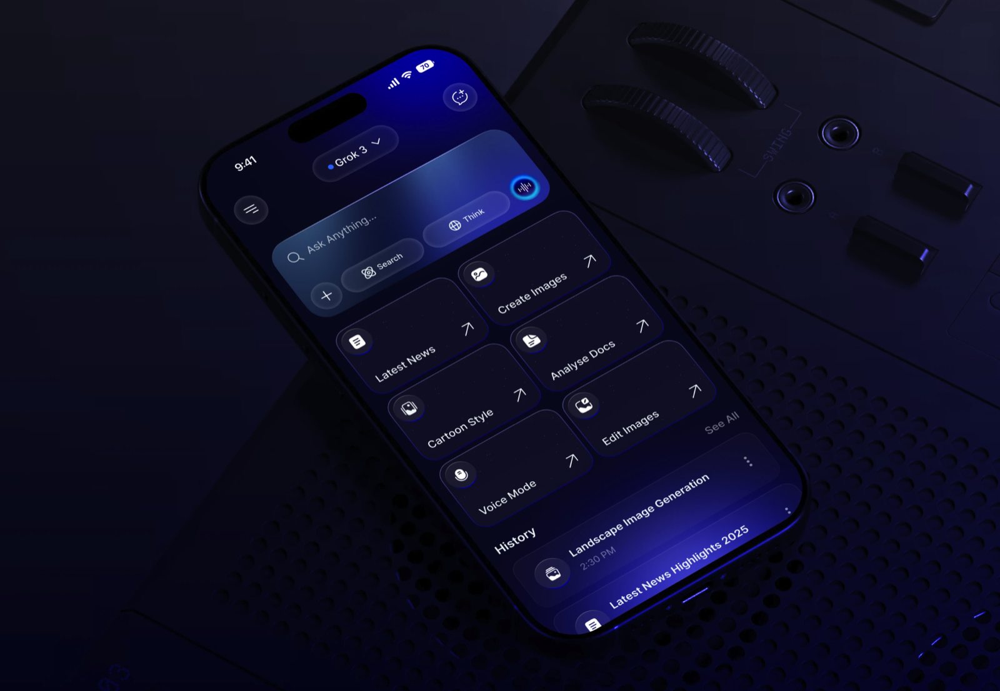
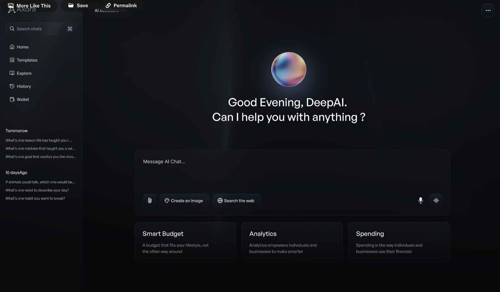
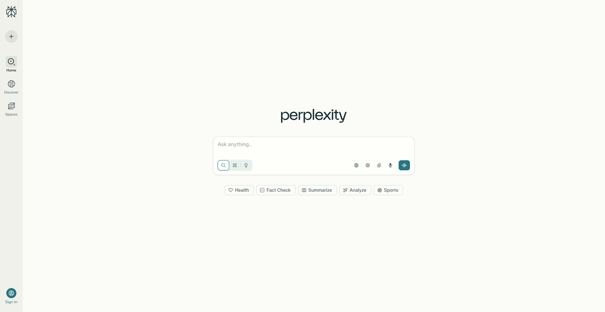

On this page
Challenge Title
Design an AI interface that allows users to interact naturally with an intelligent assistant. Think beyond a simple chat box — how can your design make the AI feel smart, human, and useful and yet still meets users existing mental models and existing expectations.
Potential Inclusions
- Text input field — main area to type or paste prompts/questions.
- Send button / paper-plane icon — to submit a message.
- Conversation thread — scrollable list showing user and AI messages.
- Message bubbles — distinct visual styles for user vs. AI responses.
- “AI is thinking…” indicator — animated dots or pulse while processing.
- Voice input button — optional microphone icon for voice prompts.
- Upload / attach button — to share images, files, or documents.
- Quick action chips — suggested follow-up actions (e.g., “Summarize,” “Explain more”).
- Avatar or assistant icon — subtle identity marker for the AI.
- Empty state prompt — placeholder like “Ask me anything…” when chat is blank.
Inspiration


